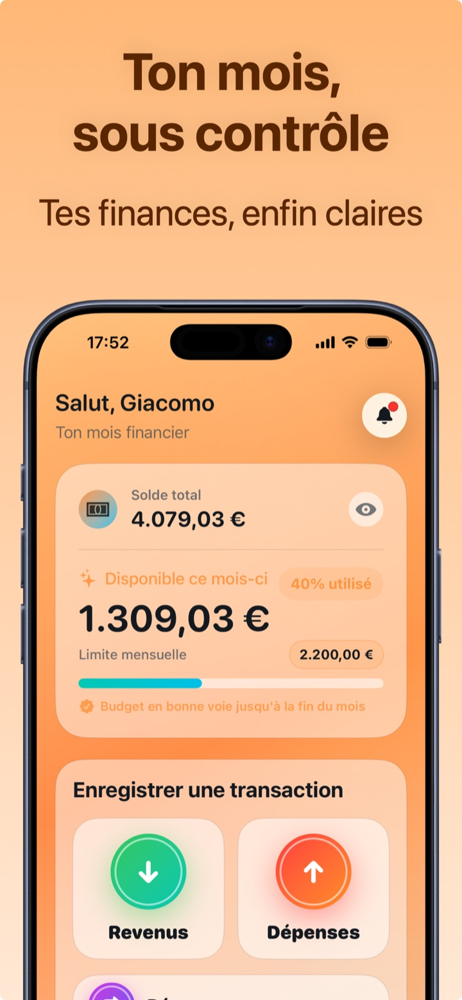

Comment faire un budget mensuel (qu'on respecte vraiment)
Un budget mensuel n'est pas une punition : c'est décider à l'avance combien vous pouvez dépenser, pour arrêter de le découvrir à la fin du mois. Le secret n'est pas de le faire parfait — c'est de le faire réaliste et de le contrôler en 5 secondes par jour.
Étape 1 — Partez de ce que vous dépensez vraiment
L'erreur classique est de fixer un budget « optimiste » (ex. 800 €) alors qu'historiquement vous dépensez 1 300 € : au premier dépassement, vous l'abandonnez. D'abord suivez vos dépenses pendant 2-4 semaines (ou regardez vos relevés des 3 derniers mois) et calculez votre moyenne réelle. Le premier budget utile, c'est : moyenne réelle − 10 %. Des coupes petites mais tenables.
Étape 2 — Un seul chiffre, puis les catégories
Beaucoup abandonnent parce qu'ils démarrent avec 15 budgets séparés. Commencez avec une seule limite mensuelle pour les dépenses variables (excluez loyer/crédit et factures, qui sont fixes). Après deux ou trois mois, quand vous connaissez vos chiffres, vous pourrez raisonner par catégorie : alimentation, transports, loisirs…
Étape 3 — Contrôlez-le chaque jour, en 5 secondes
Un budget que vous ne regardez qu'en fin de mois est une nécrologie. Il vous faut trois chiffres toujours visibles :
- Ce qu'il reste du budget ;
- La moyenne journalière que vous pouvez encore dépenser ;
- La projection : à ce rythme, est-ce que je tiens jusqu'à la fin du mois ?

Étape 4 — Dépasser n'est pas échouer
Un mois au-dessus de la limite est une donnée, pas une défaite : regardez quelle catégorie a dépassé et décidez si vous coupez là ou si vous relevez le budget. Le bon budget est celui que vous respectez 10 mois sur 12 — si vous les respectez tous les 12, il est probablement trop large.
Comment définir le budget mensuel dans Crena
- Ouvrez Crena et fixez votre limite mensuelle (ex. 2 200 €).
- Enregistrez vos dépenses en deux secondes (ou d'un toucher depuis le widget) : le disponible se met à jour en temps réel.
- Sur l'accueil, vous voyez ce qu'il reste, le pourcentage utilisé et la moyenne journalière ; Crena vous dit si vous êtes « dans les clous » jusqu'à la fin du mois.
- Dans le Calendrier, vous contrôlez le budget du mois et les dépenses jour par jour.
- En fin de mois, ouvrez Statistiques : catégories, top des dépenses et tendance — pour caler le budget du mois suivant sur les données, pas sur les espoirs.
Questions fréquentes
Quel montant pour mon budget mensuel ?
Le budget doit-il inclure loyer et factures ?
Que faire si je dépasse à la mi-mois ?
Essayez Crena gratuitement
Dépenses en deux secondes, budget mensuel et statistiques claires. Sans inscription et sans connecter votre compte.
Télécharger surApp Store